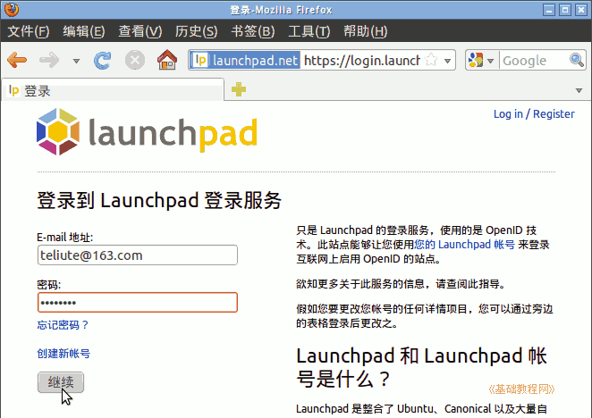
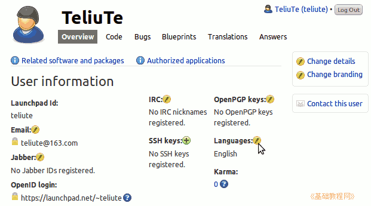

Launchpad 翻译指南
作者：TeliuTe 来源：基础教程网
一、注册 Launchpad 账号 返回目录 下一课Launchpad 网站上可以在线翻译，并且可以很方便地合作、学习、参考其他人的翻译；
1、注册 Launchpad 账号
1）先注册一个用户名，点击进入：https://launchpad.net/；
在右上角找到 Log in/ Register “登录/注册”链接，点击进入；
2）在出来的页面里，在下面点击下边的“创建新账号”链接；
3）输入自己的全名、邮箱地址、密码，下边的验证码看不清就点旁边的刷新按钮换一个；
4）点“继续”提示发送了一封邮件，这时新开一个窗口去登录自己注册的邮箱；
5）在自己的邮箱里，找到一封来自 Launchpad 的邮件，打开找到里面的验证码复制一下，也可以把下边链接复制到地址栏，然后点转到按钮；
6）输入验证码后点“继续”，再点击出来的确认登录按钮，就完成了；
7）登录成功后，出来欢迎页面，可以点自己的用户名进行设置，或者点下边的常用任务操作；
8）以后在右上角点登录时，在第一个“已经注册”里输入自己的邮箱地址、密码，然后点“继续”就可以登录；

9）然后在下边选择一个认证的网站点击进入，上面的资料不用修改；
2、设置语言
1）点击右上角自己的用户名进入个人主页，在中间找到“Languages:”语言右边的小按钮，点击修改；

2）在出来的语言列表中，找到C开头的 Chinese (Simplified)打勾选中，然后点下边的“Save”保存按钮；
3）回到主页，还可以点右上边的“Change details”更改详细资料，设置自己的其他信息；
4）加入中文贡献小组，点击进入： https://launchpad.net/~ubuntu-china-trans-contributors，
在下面找到 “Join this team” ，点击就可以申请加入中文小组，请先阅读里面的翻译规范；
另一个 Ubuntu 简体中文翻译小组：https://launchpad.net/~ubuntu-l10n-zh-cn
5）Ubuntu 文件翻译列表： https://translations.launchpad.net/ubuntu
本节学习了注册 Launchpad 的基础知识，如果你成功地完成了练习，请继续学习下一课内容；
本教程由86团学校TeliuTe制作|著作权所有
基础教程网：http://teliute.org/
美丽的校园……
转载和引用本站内容，请保留版权信息和本站链接。